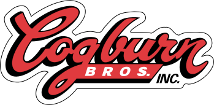

Making Cut Paths
- Open the file in Illustrator. Regardless of whether the original art is in vector or raster format, Illustrator is the best place to draw cut paths.
- There are two ways to draw cut paths – either manually draw a path around the artwork or use the vector artwork as a basis for the paths. This choice depends on the characteristics of the original art and the final use of the art.
- Self-enclosed logo – example: Rudder Club. This artwork has a solid border or outline enclosing the entirety of the graphic. Appropriate use would be a sticker cut out to the shape of the logo, either to size or with a white border around it.

- Multiple separated elements such as a logo with text. Example: Peninsular, Cogburn. These logos will need cutlines either entirely hand drawn or combining hand drawn lines merged with some logo elements.
- Multiple separated elements that need to be cut out individually. Example: Island Girl decal. This often happens when the background needs to be peeled away for transfers.
- Square or circular stickers – Square or rectangular stickers such as bumper stickers can have cutlines drawn in Illustrator, ImagePrint, or just sized in any layout package to final size and ImagePrint will cut to borders.

Making Cutlines for Self Enclosed Work
- With the artwork open in Illustrator, select all.
- Copy and paste this into a new layer to work on the cutline while leaving the original artwork intact.
- Click on Object > Path > Outline Stroke to turn all strokes into solid fills.
- In your Windows menu, make sure the Pathfinder dock is open.
- In the Pathfinder menu, click on the Unite button under Shape Modes.
- Using the Direct Selection tool, carefully select any interior lines or cutouts in the artwork. You should have one solid outline left.
- If you want to cut out your sticker to the size of your logo, this cutline is now ready. Hide the cutline layer in your Layers palette and show the original artwork layer, and save your file for Step #.
- Sometimes the client may want a border of white space around the edge of the sticker. To expand the outline open up Object > Path > Offset Path.
Make sure Preview is checked so you can see what the offset path will look like. Positive numbers in the Offset field expand the outline. Use a negative number to shrink the outline if you want the cut to start slightly inside of the logo. In the Joins dropdown field, using Miter will keep the peaks and edges sharp, Round will round them off.